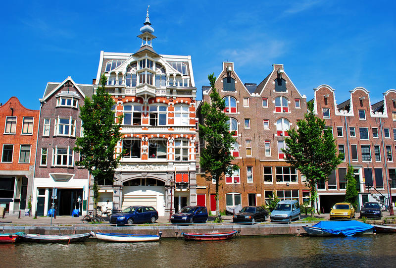

Amsterdam is the capital of the netherlands. It is located in the province 'Noord-Holland',situated in the west. It is one of the most popular destinations in europe,recieving more than 4.5 million tourists annually.
It is a meeting point for all different cultures around the world and has a welcoming attitude towards visitors. It is well known for it's museums , red light districts and a great variety of eating and drinking places. There is also a small cities like Hilversum which is characterised by it's lush surroundings, picuresque and historic villages,untouched natural spaces and beautifull lakes. Located at the southeast of the Amsterdam city centre, the area is made up of cities and towns which include Hilversum,Bussum,Naarden,Huisen,Laren,Blaricum and Weesp all offering a popular blend of upmarket luxury,traditional village atomosphere and a modern living.